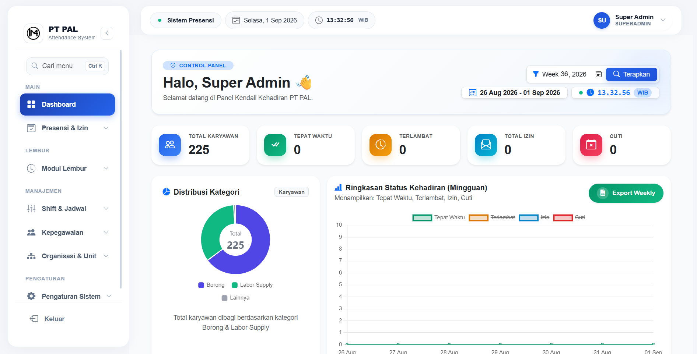
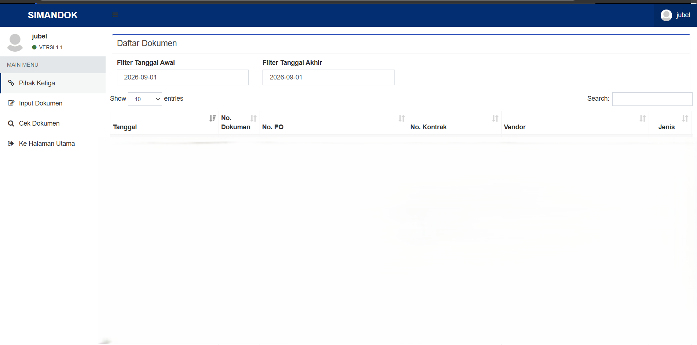

Pengembangan & Pengamanan Ekosistem Aplikasi Enterprise di PT PAL Indonesia
Studi kasus komprehensif mengenai perancangan sistem absensi vendor (Subkon), refactoring & penguatan keamanan sistem dokumen enkripsi (Simandok), serta integrasi sistem internal perusahaan galangan kapal BUMN.
Ringkasan Eksekutif (Executive Summary)
Sebagai Pemrogram Komputer Contract di PT PAL Indonesia (Badan Usaha Milik Negara industri pertahanan & maritim terkemuka), saya bertanggung jawab merancang, mengoptimalkan, dan mengamankan berbagai sistem informasi enterprise secara end-to-end. Fokus utama meliputi pembangunan Website Subkon dari tahap arsitektur skema database hingga deployment server, refactoring codebase Website Simandok untuk perlindungan dokumen rahasia, serta pengujian berkala terhadap modul absensi makan siang (Siamang) dan lelang tender (Ebidding).
1. Latar Belakang & Kebutuhan Bisnis
PT PAL Indonesia mengelola ribuan tenaga kerja eksternal (subkontraktor/vendor) dan ribuan dokumen teknik perkapalan yang berstatus sangat rahasia. Sebelum modernisasi sistem dilakukan, beberapa tantangan operasional yang dihadapi antara lain:
2. Rincian Sistem yang Dikembangkan
Berikut adalah 4 aplikasi web enterprise utama yang menjadi tanggung jawab saya dalam perancangan, pengembangan, dan pengujian:
Website Siamang
Sistem Absensi Makan SiangSistem otomasi pencatatan dan verifikasi kehadiran karyawan untuk fasilitas konsumsi makan siang di galangan kapal.
Website Simandok
Sistem Management DocumentAplikasi sentralisasi penyimpanan dan sirkulasi dokumen teknis serta manajerial enterprise yang membutuhkan proteksi ketat.
Website Ebidding
Website Lelang TenderPortal pengadaan barang dan lelang terbuka untuk memfasilitasi vendor eksternal secara transparan dan akuntabel.
Website Subkon
Website Absensi VendorSistem absensi dan tata kelola tenaga kerja subkontraktor secara menyeluruh dari perancangan hingga implementasi server.
3. Dokumentasi Tampilan Aplikasi
Berikut adalah tangkapan layar antarmuka sistem yang telah terverifikasi dan digunakan di lingkungan operasional:




4. Dampak & Hasil Nyata (Impact)
Penerapan sistem informasi yang stabil, terstruktur, dan terdokumentasi menghasilkan peningkatan efisiensi yang terukur bagi tim manajemen dan pengguna di lapangan:
5. Pembelajaran Utama (Key Takeaways)
Bekerja di lingkungan industri manufaktur strategis seperti PT PAL Indonesia memberikan pengalaman berharga tentang bagaimana software engineering harus selaras dengan prosedur ketat (SOP), kepatuhan standar keamanan data (cyber security standards), dan keandalan sistem jangka panjang.
Kunci keberhasilan proyek ini adalah komunikasi lintas divisi yang intensif, pemahaman mendalam terhadap kebutuhan user non-teknis melalui pembuatan video panduan yang mudah dipahami, serta disiplin penulisan kode bersih yang siap di-audit sewaktu-waktu.